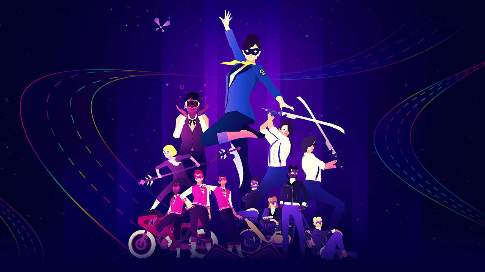
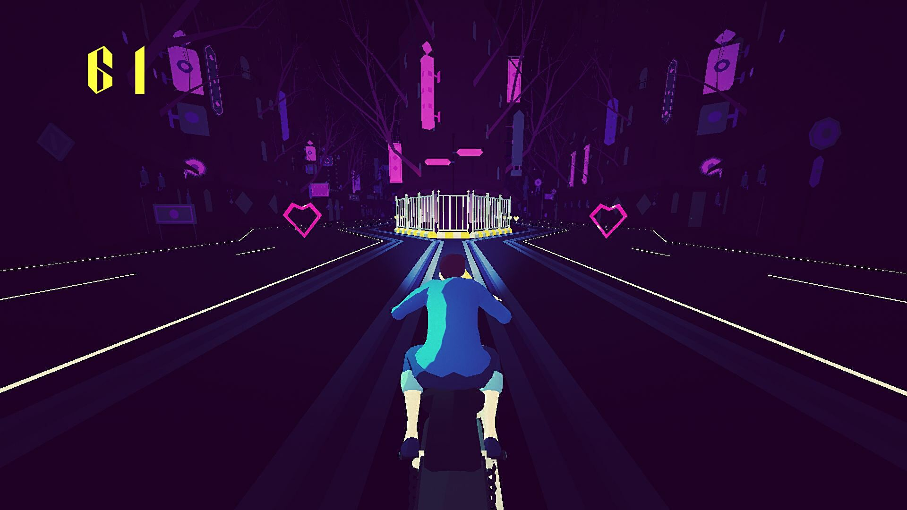

Sayonara Wild Hearts
A Sayonara Wild Hearts egy nagyon érdekes tünemény, mivel egyszerre egy videojáték és egy zenei album. A legtöbb játék esetében elhagyható a zene, mert a legtöbb esetben is csak a hangulat egy részét veszti el az ember a játék közben. A Sayonara esetében viszont, ha kiveszed a zenét olyan, mintha a játék lelkét tépted volna ki. És míg a zeneszámok továbbra is hallgathatóak önmagukban, olyan mintha ott maga a test hiányozna. Nem hiába hivatkoznak rá mint pop album videójáték. Miután már játszottam a játékkal, így az emlékekkel egybekötve több jelentősége van a zenei albumnak, viszont hogyha valaki a játék játszása nélkül hallgatná meg az albumot, nem hiszem, hogy sok érzelmet hozna fel belőle. A játék 23 pályán keresztül kíséri végig főhősünk küldetését, hogy visszaállítsa a harmóniát egy elveszett világban (A világ a tarot kártyákon alapul). Különböző démonokat kutatunk fel, és harcolunk velük, de nem a videójátékoktól megszokott módon. A játék egy ritmusjátékhoz áll legközelebb, mivel csak a jobbra balra kell a karaktert irányítani különböző járműveken, valamint Quick time event-ekre kell válaszolnunk, mégis inkább a játék és az aktuális zene együttes harmóiájának lüktetésére kell figyelnünk.
A pályákon kis szívecske alakú pontokat kell gyűjteni, és ezek adják a pontot. Minél többet szedünk össze egy fajtából, annál többet fog érni. De vigyázat ha valamelyik akadály elvétjük, akkor bár az eddig megszerzett pontok nem vesznek el, viszont egy egy darab újra az alapértékéről kezdi el halmozni magát, ami 500 felszedett szivecske után elég nagy veszteség. Egy pálya végén megkapjuk az értékelésünket az összegyűjtött pontok alapján, ami lehet semmi, bronz, ezüst vagy arany rang. A teljes játékot 6 szegmensre lehet bontani, melyek mindegyike egy démon megkeresésére, és legyőzésére fókuszál. Egy ilyen szegmens túlnyomóan egy kaptafára épül. Egy dal miközben keressük, egy alatt üldözzük, egyben harcolunk vele és legyőzzük, majd egy úgynevezett Heartbreak keretében megszerezzük magunknak a lelkét. Ennek az összesítését az alábbi táblázatban olvashatjátok:
A pályákon kis szívecske alakú pontokat kell gyűjteni, és ezek adják a pontot. Minél többet szedünk össze egy fajtából, annál többet fog érni. De vigyázat ha valamelyik akadály elvétjük, akkor bár az eddig megszerzett pontok nem vesznek el, viszont egy egy darab újra az alapértékéről kezdi el halmozni magát, ami 500 felszedett szivecske után elég nagy veszteség. Egy pálya végén megkapjuk az értékelésünket az összegyűjtött pontok alapján, ami lehet semmi, bronz, ezüst vagy arany rang. A teljes játékot 6 szegmensre lehet bontani, melyek mindegyike egy démon megkeresésére, és legyőzésére fókuszál. Egy ilyen szegmens túlnyomóan egy kaptafára épül. Egy dal miközben keressük, egy alatt üldözzük, egyben harcolunk vele és legyőzzük, majd egy úgynevezett Heartbreak keretében megszerezzük magunknak a lelkét. Ennek az összesítését az alábbi táblázatban olvashatjátok:

A Sayonara Wild Hearts-ot nehéz nem művészeti alkotásnak kezelni. A neonos képi világa és a modern stílusú zenéje olyan szintű harmóniát teremt, mint amilyen harmóniát főhősünk próbál meg teremteni. Többször is újrajátszottam szinte az összes pályát, és tervezem is még, és ez is mutatja, mekkora nyomot tud hagyni az emberben.
Bár azt mondtam, hogy nem feltétlen élvezhető a zene a játék nélkül, azért ide rakom az album linkjét, hátha megjön a játékhoz is a kedv: Sayonara Wild Hearts
Köszönöm hogy végigolvastad a Sayonara bemutatását! Ha valami kérdésed, megjegyzésed lenne a játékkal kapcsolatban, esetleg valamilyen másik indie játékot szeretnél javasolni, azt a kezdőlap alján megteheted.